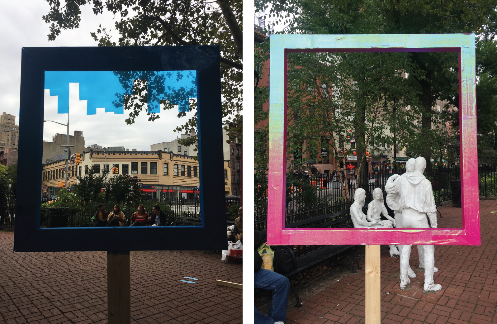
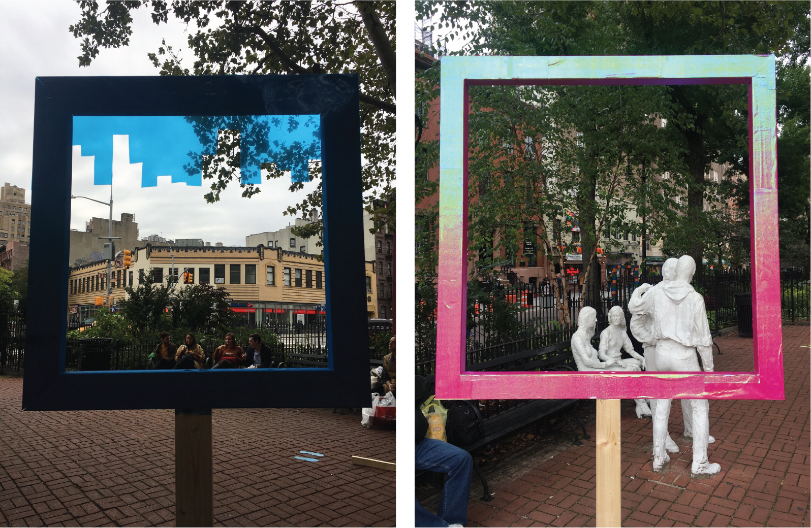
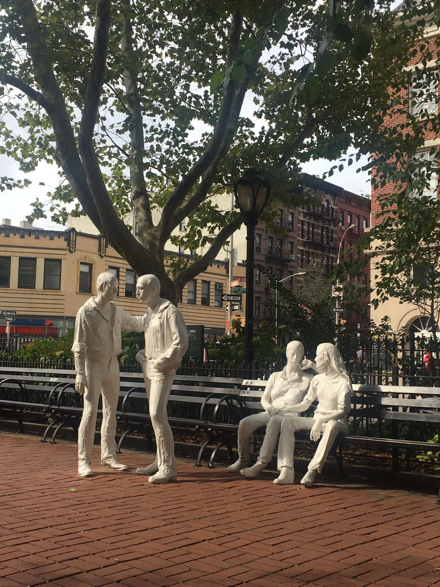
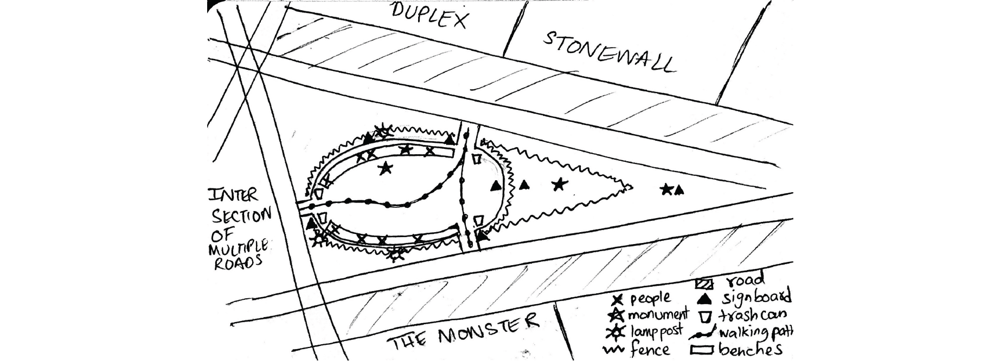

Chapter 2: Interactive Installations / Reframing History
New York, NY
November 2019
A series of wooden frames installed in Christopher Park (New York City), that highlight different unnoticed histories of the park and provoke thought.
 

Christopher Park is mostly known for being located across the street from the Stonewall Inn which is famous because of the 1969 Stonewall Riots. However, it has much deeper and layered histories than that. It is indigenous land that was once a tobacco farm (1630s), saw class struggles in the 1800s, had a civil war monument installed in 1936 and the gay liberation monument installed in 1992.
 Observations:
1. Even though the Gay Liberation monument is in honor of Stonewall, you can’t really clearly see the Inn from inside the park.
2. The civil war monument is hidden beyond the fence, so you can’t really walk past it and the bronze statue blurs into the plants from afar.
3. The skyline is interestingly low for New York City.
4. The monument is positioned in a way that people do not interact with it from multiple sides, so many details go unnoticed.
Therefore, we aimed to ‘frame’ different parts of the park to highlight some of the layered histories of the place.

First Prototypes made from cardboard:
* Left: The frame with the shot of the civil war monument was successful and grasped people’s attention. Some people took photos through it.
* Right: The other frame at the side entrance just blended into the environment and did not catch people’s attention as they passed by. However, the few who did notice, were pleasantly surprised by what it framed.
20 hours in the woodshop later...
We constructed our second round of prototypes out of wood, and we decorated some of the frames in bright textures to symbolize gay pride and catch people’s attention, even as they're passing by.

Second Prototypes:
Frame 1: Framed the civil war monument (2' x 2'), attached to the fence, and left as plain wood.
Frame 2: The two way frame, (4' x 2'), attached to a dismantle-able stand, covered with a mirrored surface.
Frame 3: This was at one of the side entrances (3' x 2'), and framed the gay liberation monument from the back, painted with a brightly colored pattern, attached to the fence.
Frame 4: Framed the skyline (2' x 2'), attached to a dismantle-able stand, painted bright blue with a blue-tinted transparent layer of plastic forming the silhouette of the NYC skyscrapers, in contrast to the low skyline.
Frame 5: Framed the gay liberation monument from the side with Stonewall in the background (3' x 3'), attached to a dismantle-able stand, covered with pink iridescent paper.
We noticed that people interacted more if they saw other people interacting with it first. It was also interesting to see strangers interact through the two way frame. The video shows some of the 98 interactions we had in 2.5 hours.
Conclusively, while we may not have gotten people to really know all the overlapping histories of the place, we did however successfully get them to view the space from different perspectives, hopefully prompting them to ask questions about what the frame frames and why, for the few seconds that they stood there.
Made in collaboration with the wonderful Cassandra Hradil.